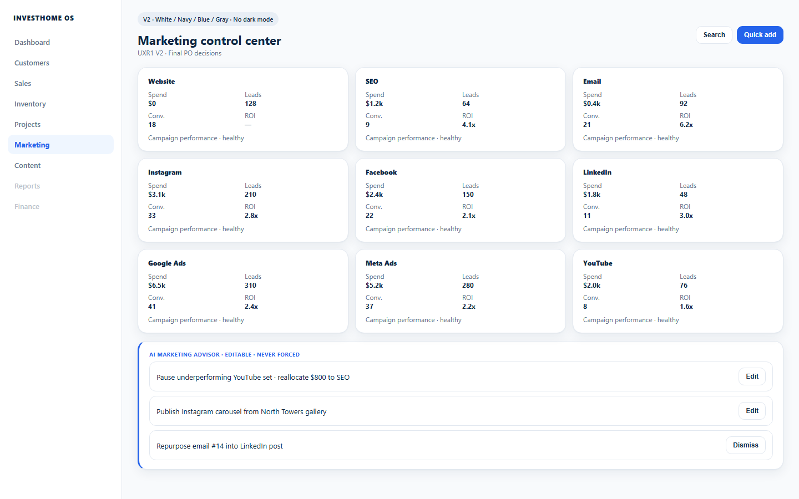

Studio, not subway map. Deep advertising, attribution, and AI routes stay available under Advanced — chrome stops advertising them.
Low-fidelity wireframe
Structured layout · boxes only
Top tabs for primary work. Advanced ▾ holds advertising, attribution, forecasting, automations, vendors, AI — routes exist, chrome does not shout them.
Marketing[Campaigns] [Audiences] [Content Studio →] [Calendar] [Advanced ▾]
Active campaigns
4
Leads in period
86
Content shipped
12
Spend 7d
…
Production this week → Content Studio
Channel health
Site · Ads · Social · Email Honest empty if disconnected
Summer Launch — Active — 42 leads — [Open] Marina Awareness — Draft — [Continue] [+ New campaign]
High-fidelity mockup
Premium light SaaS · sales/marketing friendly
Calm marketing ops home — production and campaigns first, power tools in Advanced.
Desktop frame · Marketing HomeMockup

High-fidelity desktop · Marketing home KPIs, production, channel health, campaigns.
Desktop layout
Primary working surface
Composition
Primary tabs: Campaigns, Audiences, Content Studio, Calendar, Advanced
KPI row + production + channel health
Campaign list/cards — wizard launched from + New, not on home
Spend KPI only if finance permitted
Density & hierarchy
No 12-step wizard on landing
WhatsApp/SMS/forecasting/attribution/vendors/AI via Advanced or deep links
Honest empty when channel not connected
Mobile behavior & preview
Phone-first adaptations · operational queue first
Marketing
4
Campaigns
86
Leads
Summer Launch · Active
Content Studio →
Home
Sales
Mkt
More
Primary mobile job: finish today’s queue — not recreate the desktop dashboard.
Behavior rules
KPI 2×2; campaign list primary scroll
Content Studio as prominent link button
Advanced behind More menu
User journey
Check production→Open campaign→Ship content→Advanced only if needed